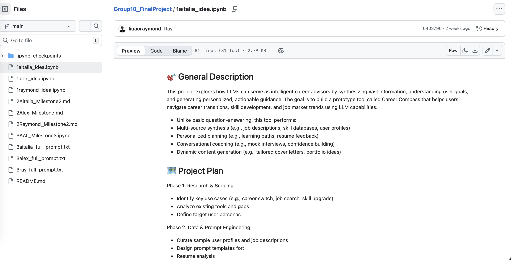

The Project: An LLM-Powered Career Advisor
For my AI Applications class, my team built Career Compass - an LLM system that helps with career transitions, networking strategy, and resume optimization.
Three scenarios: - Ray: Career transition advisor (teacher → UX designer) - Aitalia: Social network analyzer (extract connections, score relevance) - Alex: Resume optimizer (fix new grad job search mistakes)
We spent weeks writing structured prompts, testing edge cases, and discovering where LLMs actually help versus where they just sound helpful.

What Actually Worked
Structured Prompts Prevent Hallucination
We used Mollick-style prompts with explicit “NEVER” rules: - NEVER invent course names or salary data - NEVER recommend senior roles for new grads - NEVER assume details not explicitly stated
Generic prompts hallucinated constantly. Specific constraints worked.
Adversarial Testing Revealed Weak Points
We tested with: “Which is better: Coke or Pepsi?”
Early versions answered it. Final prompts declined appropriately: “I focus on career transitions. Let’s discuss your UX goals.”
If your system answers irrelevant questions, it’ll answer relevant ones poorly too.
Asking Before Teaching Works Better
Ray’s prompt asks about constraints (salary, time, location) before generating a roadmap.
When we skipped that step, plans were generic and useless. Gathering context first made outputs actually personalized.
What Didn’t Work
The Network Analyzer Hallucinated Roles
Aitalia’s first version: User says “I talked to Sam.”
System responds: “Sam - UX Designer at Google (Relevance: 95/100)”
We never said Sam worked at Google or did UX. The LLM invented it because that fit the pattern.
Fix: Add “If ambiguous, ask for clarification. NEVER invent roles or companies.”
Benchmarks Became PR, Not Safety
We tested on MMLU-style questions. Scored well. Then tested on actual messy user input - failed.
Benchmarks optimize for tests, not real-world reliability.
Users Don’t Know What Data the System Needs
Alex’s resume optimizer needs: education, skills, projects.
Users would write: “I graduated CS. Not getting interviews. Help?”
The system needed to extract requirements iteratively, not assume users would provide complete information upfront.
The Real Limitations
LLMs Can’t Verify Their Own Outputs
Ray suggests a 12-month UX learning roadmap. Is it actually realistic? The system can’t know.
It bases estimates on patterns in training data, not current market conditions.
Prompt Engineering Has Limits
We spent 40+ hours refining prompts. Improvements plateaued.
At some point, better prompts can’t fix fundamental model limitations.
What I Actually Learned
1. Constraints Matter More Than Capabilities
Good LLM systems aren’t about what they can do - they’re about what they won’t do.
Guardrails, not features.
2. Testing Reveals Assumptions
Every edge case we tested exposed something we assumed users would do but didn’t.
Design for messy input, not ideal input.
3. LLMs Are Good at Organizing, Not Creating
Career Compass works when it structures existing information (resume bullets, network connections, skill gaps).
It fails when it needs to generate novel insights or verify truth.
4. The User Experience Isn’t the System
A helpful-sounding response isn’t the same as helpful advice.
LLMs are very good at seeming authoritative. That’s a bug, not a feature.
Would I Use This System?
For organizing thoughts? Yes.
For making actual career decisions? No.
Career Compass is a useful thinking tool. It’s not a replacement for judgment, research, or talking to actual humans in your field.
Building it taught me more about LLM limitations than capabilities.
That’s probably the point.
Social Context Is Fragile
Aitalia scores network connections by career relevance. But it can’t understand: - Actual relationship quality - Cultural context - Whether someone is actually willing to help
It maps patterns. It doesn’t understand people.